Panduan Penggunaan BelajarPlus
Pilih jenis akun kamu di bawah ini untuk melihat panduan urut dan terarah sesuai kebutuhan peranmu.
Pendaftaran & Aktivasi Akun BelajarPlus
Registrasi AkunBuka portal belajarplus.id/auth. Antarmuka terbaru BelajarPlus mengusung konsep registrasi satu pintu dengan badge "Satu halaman untuk siswa & guru" — satu akun untuk semua institusi yang dihubungkan ke sekolah setelah berhasil masuk.
- 1. Tab "Daftar" — Pada form switcher di layar, klik tab "Daftar" di sebelah kanan tab "Masuk".
- 2. Nama Lengkap — Ketikkan nama lengkap aslimu sesuai dengan buku rapor atau data Dapodik sekolah (contoh: Budi Santoso).
- 3. Alamat Email Aktif — Masukkan alamat email aktif milikmu (contoh: anda@sekolah.sch.id atau Gmail pribadi) untuk menerima email aktivasi.
- 4. Kata Sandi (Password) — Buat kata sandi akunmu. Sistem secara otomatis memvalidasi 5 kriteria kekuatan keamanan:
- Minimal 8 karakter
- Ada huruf (a–z)
- Ada angka (0–9)
- Ada huruf kapital (opsional, memperkuat kata sandi)
- Ada simbol seperti
! @ #(opsional, memperkuat kata sandi)
- 5. Verifikasi Kata Sandi — Ketik ulang kata sandi yang sama persis pada kolom "Ulangi kata sandi".
- 6. Centang "Tampilkan Password" — Gunakan centang ini untuk memastikan karakter yang kamu ketik sudah benar dan bebas dari salah ketik.
- 7. Klik Tombol "Daftar" & Verifikasi Email — Tekan tombol biru "Daftar". Sistem akan langsung mengirimkan email aktivasi. Buka kotak masuk (Inbox atau folder Spam/Promosi) emailmu lalu klik tautan verifikasi agar akun aktif sepenuhnya.
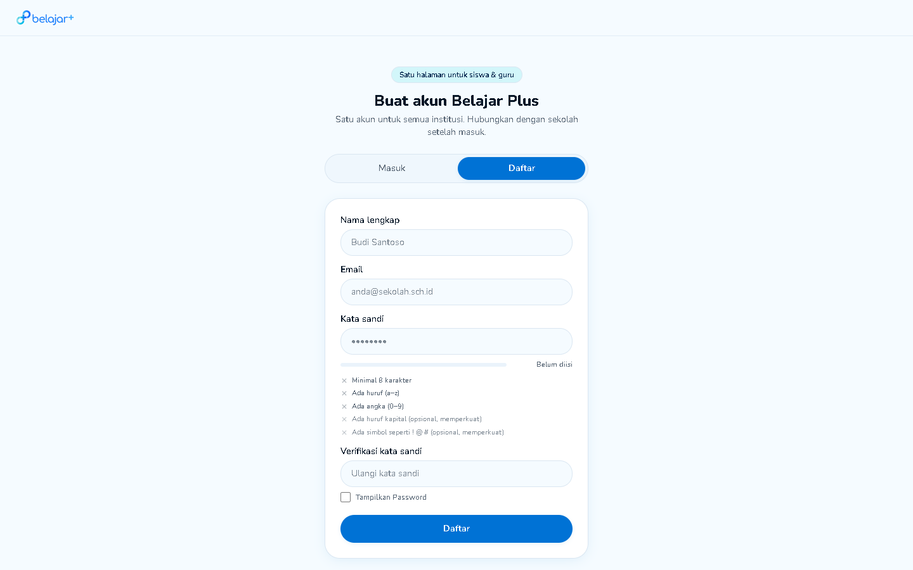
Login ke Akun Siswa & Pemulihan Kata Sandi
Masuk AplikasiSetelah akun terdaftar dan email terverifikasi, buka belajarplus.id/auth pada tab "Masuk". Formulir login terbaru dilengkapi fitur kenyamanan visual:
- Alamat Email: Ketikkan email terdaftar persis tanpa spasi di awal atau akhir.
- Kata Sandi: Masukkan password akunmu (sensitif huruf besar dan kecil).
- Tampilkan Password: Centang opsi "Tampilkan Password" untuk mengecek ketepatan pengetikan karakter agar terhindar dari salah ketik.
Klik tautan "Lupa kata sandi?" tepat di bawah tombol Masuk. Layar modal reset akan terbuka — masukkan alamat email terdaftar, lalu klik tombol kirim. Sistem akan mengirimkan link pemulihan ke inbox emailmu (berlaku selama 15 menit). Periksa folder Spam/Junk jika pesan tidak muncul di kotak masuk utama.
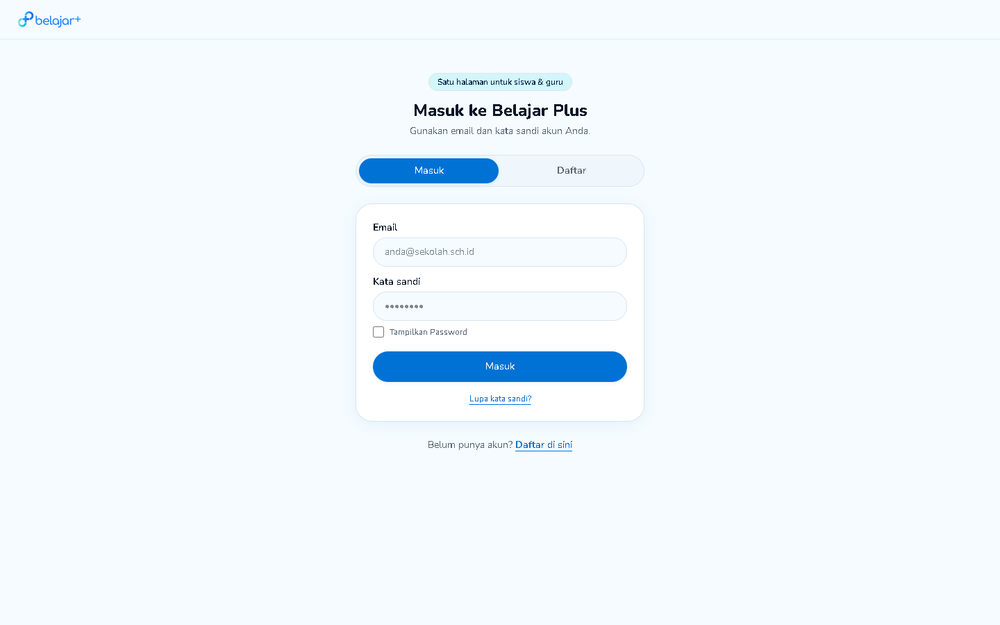
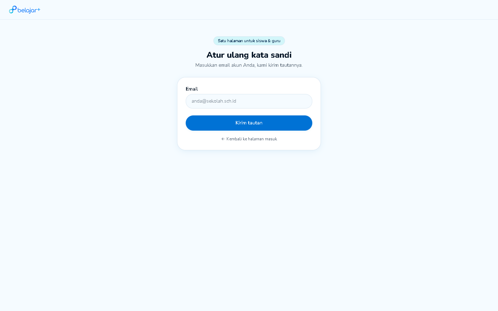
Pemilihan Institusi, Dashboard & Pusat Informasi Sekolah
Pusat KendaliPada pembaruan arsitektur sistem BelajarPlus terbaru, siswa yang terdaftar di satu atau lebih sekolah mitra akan diarahkan terlebih dahulu ke layar "Pilih institusi untuk melanjutkan":
- 1. Layar Pilih Institusi — Pilih sekolah atau institusi tujuanmu (contoh: Belajar Plus · Siswa atau SMA Mitra), lalu klik tombol "Masuk".
- 2. Switcher Institusi di Header — Kamu tidak perlu logout untuk berpindah instansi! Klik tombol "Institusi aktif" di bilah header atas kapan saja untuk mengganti sekolah atau peran.
- 3. Navigasi Sidebar Terpadu & Grup "Informasi Sekolah" — Menu sidebar kiri kini memuat:
- Beranda: Pusat ringkasan pembelajaran aktif.
- Pengumuman: Siaran informasi resmi sekolah yang terbagi dalam tab Semua, Belum Dibaca, dan Disematkan lengkap dengan badge angka pengumuman baru.
- Komunitas: Ruang interaksi dan forum diskusi antarwarga sekolah.
- Agenda: Kalender akademik bulanan untuk memantau jadwal kegiatan dan ujian sekolah.
- Perpustakaan, Koleksi Saya, Toko, & Pesanan: Layanan terpadu e-library dan transaksi buku.
- 4. 4 Kartu Statistik Cepat di Beranda — Pantau ringkasan kegiatan secara live:
- Kelas Saya: Jumlah rombel aktif yang sedang kamu ikuti.
- Buku Saya: Jumlah buku digital siap baca yang dipinjam.
- Tugas Aktif: Jumlah kewajiban tugas/ujian dari bapak/ibu guru.
- Hasil Terbaru: Skor evaluasi pengerjaan LJD terkini.
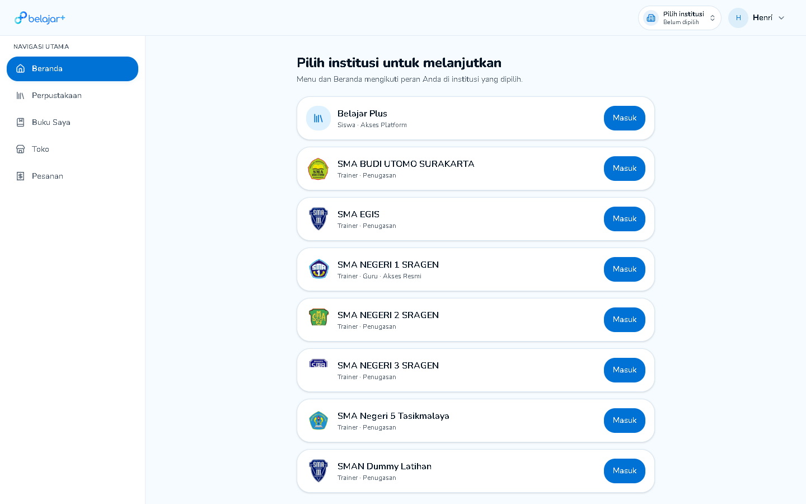

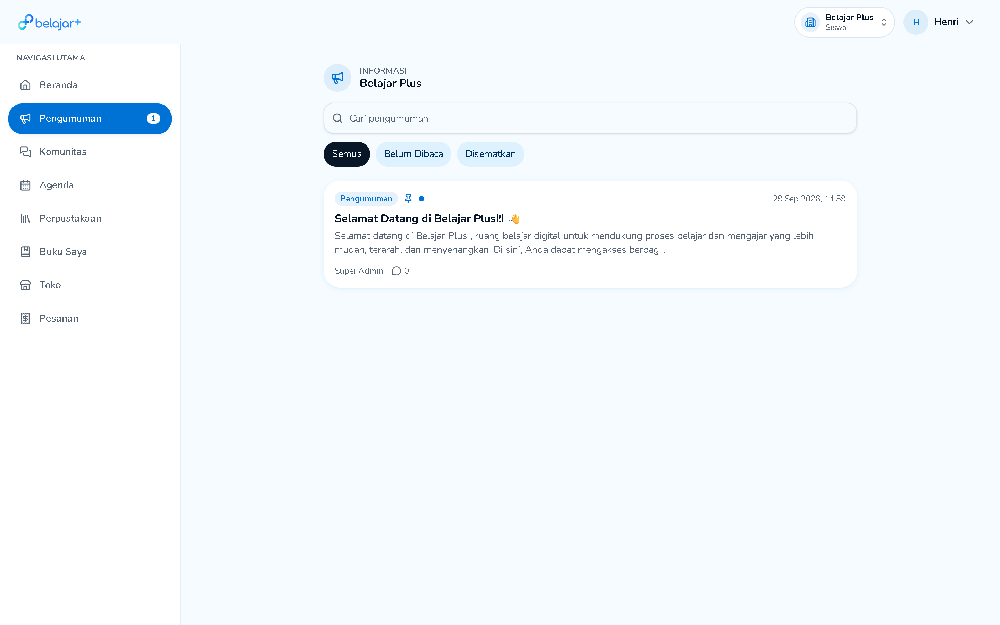
Tugas dari Guru & Pemantauan Tenggat Waktu
Penugasan AktifBagian Tugas dari guru di dashboard menyajikan daftar kegiatan terstruktur yang wajib kamu kerjakan. Desain kartu tugas terbaru menampilkan detail yang sangat spesifik:
- Judul & Bab Pembahasan: Contoh: "Kerjakan asesmen formatif bab 1 · Demo - Biologi 11".
- Indikator Progress Kegiatan: Menampilkan rasio pengerjaan (contoh:
0/1 kegiatan). - Peringatan Tenggat: Ditandai dengan warna merah tegas jika lewat tenggat waktu (contoh: "Lewat tenggat 21 Agu 2026") atau tanggal batas pengumpulan.
- Tombol Aksi Cepat ("Baca" / "Kerjakan"): Klik langsung untuk membuka bahan bacaan penugasan atau meluncurkan lembar kuis LJD.
- Tautan "Lihat semua tugas": Membuka rekapitulasi seluruh arsip penugasan semester aktif.

Manajemen "Kelas Saya" & 5 Tab Pembelajaran Ruang Kelas
Dashboard & KelasBagian Kelas saya menghubungkan akunmu dengan bapak/ibu guru pengampu mata pelajaran. Di antarmuka BelajarPlus terbaru, siswa memiliki kendali penuh mulai dari bergabung, menjelajahi 5 tab belajar, hingga opsi keluar mandiri:
-
1. Input Kode Langsung & Tombol "Gabung" — Cukup ketikkan 6 karakter Kode Kelas unik dari gurumu (contoh:
BLJ-XXXXXX) langsung pada kolom input di card Kelas saya, lalu tekan tombol biru "Gabung". - 2. Fitur "Keluar" Mandiri — Di samping tombol Masuk Kelas, terdapat tombol merah "Keluar" jika kamu salah memasukkan kode kelas atau pindah rombel tanpa perlu menunggu konfirmasi guru.
-
3. Eksplorasi 5 Tab di Dalam Ruang Kelas — Saat mengeklik tombol "Masuk Kelas", kamu akan diarahkan ke antarmuka ruang belajar yang terbagi menjadi 5 tab utama:
- Ringkasan: Menampilkan metrik Sumber Belajar, Tugas untuk Anda, Aktivitas Dikerjakan (rasio progres), Rata-rata Nilai, dan Progress Belajar (%).
- Sumber Belajar: Buku teks pelajaran dan modul acuan yang disematkan guru sebagai bahan bacaan wajib.
- Penugasan: Daftar ujian, tryout, dan kuis LJD yang siap dikerjakan siswa.
- Aktivitas Belajar: Timeline tugas terstruktur per unit pembahasan.
- Hasil Belajar: Lembar rekapitulasi nilai dan ketercapaian kompetensi di kelas tersebut.

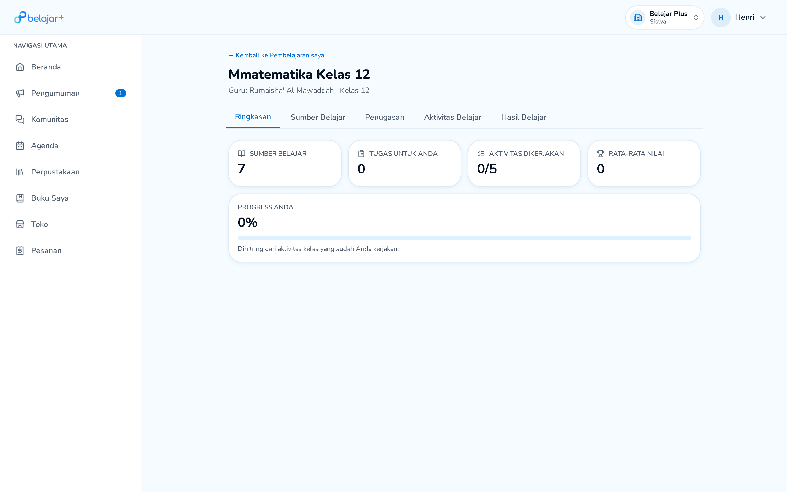
Aksi Cepat, Pindai QR, Kode Manual & Hasil Belajar
Fitur Cepat & EvaluasiBelajarPlus menghadirkan baris Aksi Cepat di dashboard utama serta fitur pemindai QR cerdas untuk memudahkan interaksi belajar harianmu:
- 📷 1. Pindai QR Kamera — Arahkan kamera HP atau webcam laptop ke kode QR pada buku paket atau materi pembelajaran guru untuk langsung membuka modul bacaan dan kuis secara instan tanpa risiko salah pilih paket.
-
⌨️ 2. Fitur "Masukkan Kode Manual" (Solusi Baru) — Inovasi terbaru BelajarPlus! Jika perangkatmu tidak memiliki kamera atau izin akses kamera diblokir browser, gunakan kartu "Masukkan kode manual" di bagian bawah pemindai. Cukup salin tautan atau kode yang tertera di bawah gambar QR buku (format:
https://... atau kode), lalu klik tombol "Buka". -
⚡ 3. 4 Pintasan Baris Aksi Cepat — Akses fitur harian langsung dari beranda:
- Pindai QR: Membuka kamera pemindai QR code buku fisik atau lembar tugas.
- Cari Buku: Pintasan instan menuju katalog e-library lengkap sekolah.
- Buku Saya: Membuka koleksi buku digital yang sedang aktif dipinjam.
- Absensi: Presensi digital harian siswa yang terhubung langsung ke sekolah mitra.
-
📊 4. Modul "Hasil Terbaru" — Menampilkan rekam jejak pengerjaan ujian LJD secara transparan:
- Nama paket tryout / simulasi (contoh: PS - Siap TKA Matematika SMA/SMK · Simulasi TKA Paket 2).
- Persentase skor ketuntasan (contoh: 93.33%).
- Rasio butir soal yang benar (contoh:
9/10 benar). - Tautan "Lihat semua riwayat hasil" untuk melihat transkrip komprehensif.
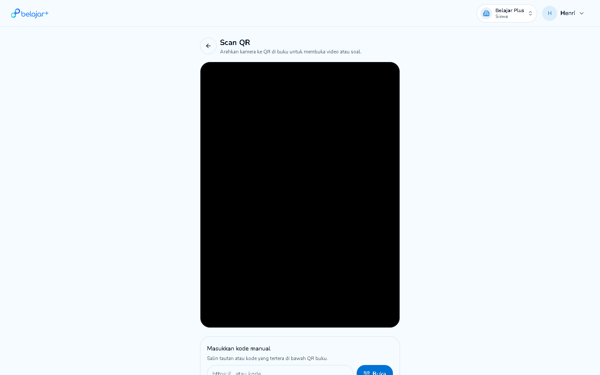
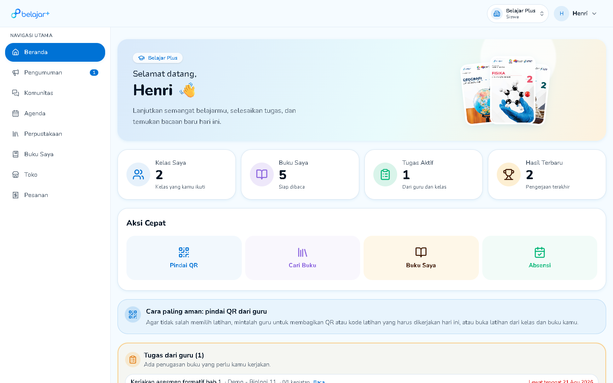
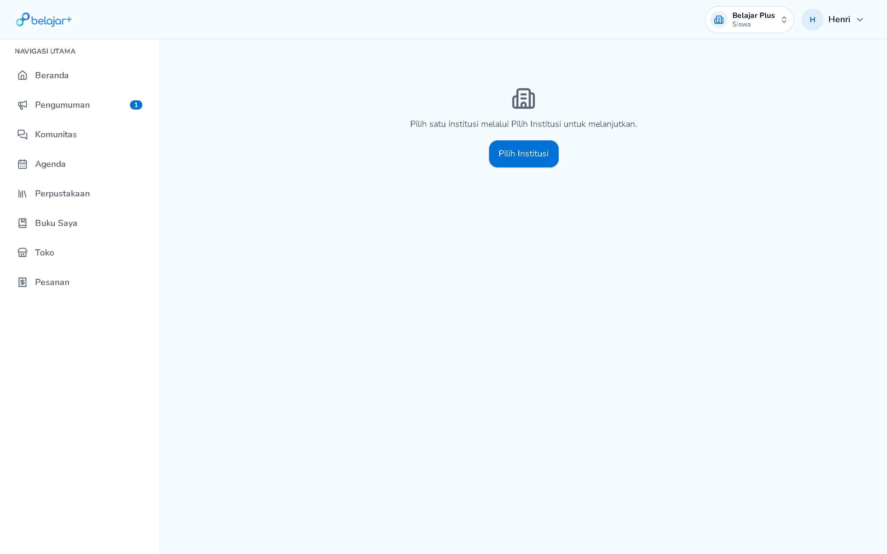
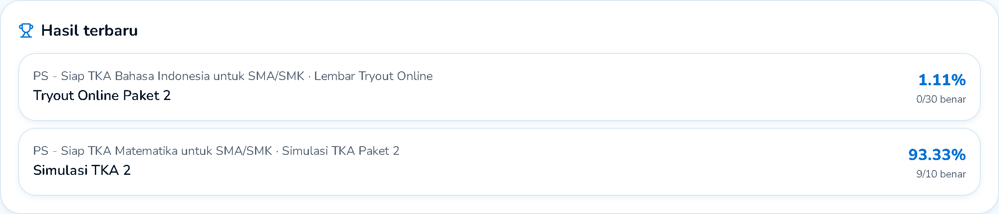
Mencari Buku di Ekosistem Perpustakaan Digital
PerpustakaanMenu Perpustakaan adalah pusat literasi digital sekolahmu. Di sini, ribuan e-book kurikulum resmi Kemendikbudristek dan buku pengayaan penerbit mitra tersedia untuk dipinjam secara gratis (selama kuota lisensi sekolah masih tersedia).
- 1. Tombol Ringkasan "📖 Buku Saya" di Header (Fitur Baru) — Di sudut kanan atas halaman Perpustakaan, terdapat tombol cepat "Buku Saya (X)" yang menampilkan jumlah buku yang sedang kamu pinjam. Tombol ini memudahkanmu memantau kuota pinjaman aktif secara live tanpa perlu bolak-balik ke dashboard.
-
2. Faceted Filter di Sidebar Kiri — Untuk hasil pencarian yang 100% presisi, kombinasikan filter di bilah samping:
- Jenjang & Tingkat Kelas: Pilih tingkatmu (SD, SMP, SMA, SMK — Kelas 1 s.d. Kelas 12).
- Tipe Buku: Saring berdasarkan jenis buku (Teks Utama, Teks Pendamping, atau Non-Teks).
- Kategori & Mata Pelajaran: Pilih rumpun ilmu spesifik (Matematika, Biologi, Sejarah, Informatika, dll).
- Pengurutan: Atur urutan tampilan berdasarkan Terbaru, Populer, atau Judul A-Z.
-
3. Status Stok & Eksemplar Digital — Setiap kartu buku menampilkan kuota real-time (contoh:
Tersedia 15 salinan). Jika kuota habis, tombol akan otomatis berubah menjadi opsi antrean digital. - 4. Tombol "Pinjam Buku" & "Baca Sekarang" — Klik tombol biru "Pinjam Buku" untuk memasukkan judul ke rak Koleksi Saya. Setelah berhasil dipinjam, tombol langsung berganti menjadi "Baca Sekarang" untuk membuka E-Reader.
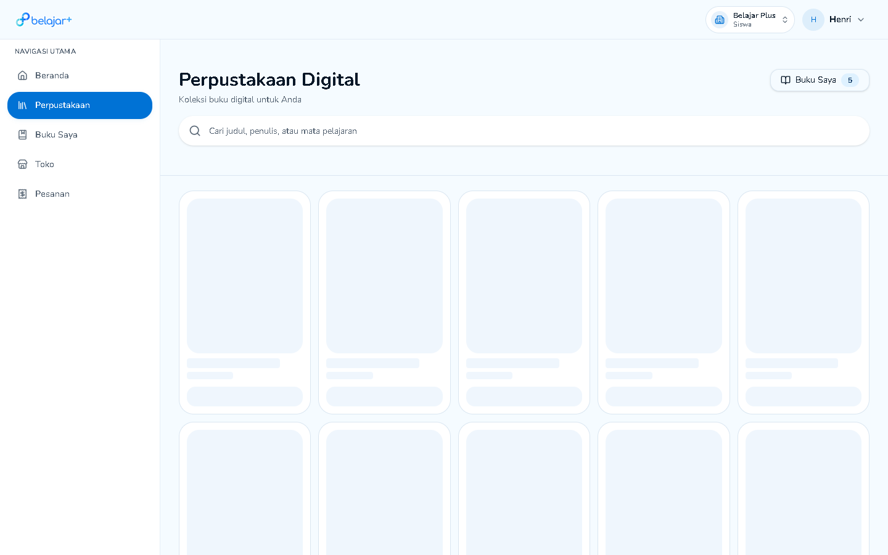
Menavigasi E-Reader & Fitur Interaktif Buku
E-Reader & PengayaanSetelah menemukan buku yang diinginkan di Perpustakaan atau menu Buku Saya, tekan tombol "Baca Buku" untuk membuka antarmuka E-Reader Interaktif BelajarPlus. Di sini kamu tidak hanya membaca teks statis, melainkan dapat berinteraksi langsung dengan materi.
🛠️ Anatomi Toolbar Bawah E-Reader:
- 1. Slider Navigasi & Nomor Halaman (`<`, Slider, `>`, `1 / 98`) — Geser titik slider untuk melompat ratusan halaman secara instan, atau gunakan tombol panah kiri/kanan di layar atau keyboard untuk membaca halaman per halaman.
- 2. ⚙️ Pengaturan (Display Mode) — Kustomisasi kenyamanan membaca mata: mengatur perbesaran (zoom in/out), mode tampilan halaman tunggal (*Single Page*) atau dua halaman bersebelahan layaknya membuka buku cetak fisik (*Two Pages*).
- 3. 📑 Daftar Isi (Table of Contents) — Menampilkan struktur hierarki bab, unit, dan sub-tema materi. Cukup klik judul bab yang diinginkan untuk melompat seketika tanpa perlu scrolling manual.
-
4. ✨ Interaktif (Interactive Activity Hub) — Fitur unggulan pengayaan digital BelajarPlus! Mengklik tombol bintang ini akan membuka jendela pop-up "Konten Interaktif" yang berisi:
- Latihan Soal Per Unit (contoh: Unit 1: Pemahaman Tekstual, Unit 3: Evaluasi dan Apresiasi).
- Tombol "Kerjakan" untuk langsung meluncurkan kuis interaktif tanpa keluar dari buku.
- Tombol "Tandai selesai" untuk mencatat rekam jejak progres mandirimu.
- Modul Simulasi TKA Paket 1 & 2 terintegrasi lengkap dengan kunci dan pembahasan.
- 5. 🔖 Bookmark — Menyematkan penanda halaman favorit atau rumus krusial agar mudah dibuka kembali di sesi belajar berikutnya.
- 6. ✏️ Whiteboard (Papan Coret Digital) — Mengubah lembar buku menjadi kanvas gambar interaktif! Siswa atau guru dapat mencoret, menuliskan coretan rumus matematika, atau memberi highlight warna catatan langsung di atas halaman buku.
🔒 Fitur Toolbar Atas & Sistem Proteksi DRM Anti-Piracy:
- Pencarian Kata Kunci (`🔍`): Ketikkan istilah atau konsep sulit untuk mencari letak pembahasannya di seluruh lembar buku.
- Keamanan Hak Cipta DRM: E-Reader dilengkapi sistem anti-bajak. Jika sistem mendeteksi tangkapan layar (screenshot) atau perekam layar aktif, muncul notifikasi "⚠️ Tangkapan layar terdeteksi. Konten disamarkan." dan teks materi otomatis dikaburkan untuk menjaga hak cipta penerbit.
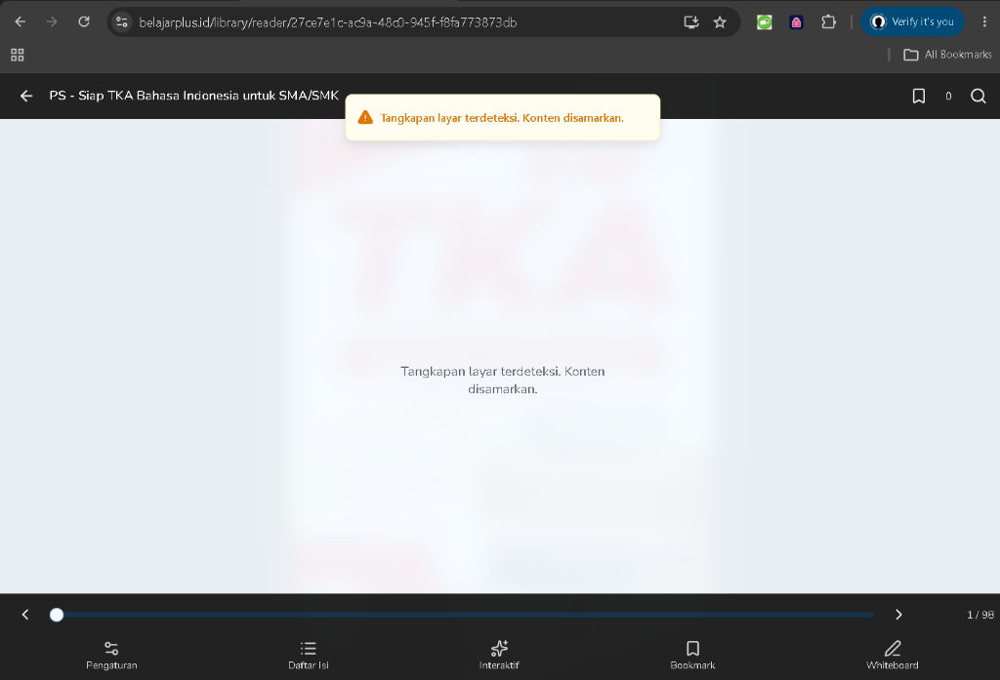
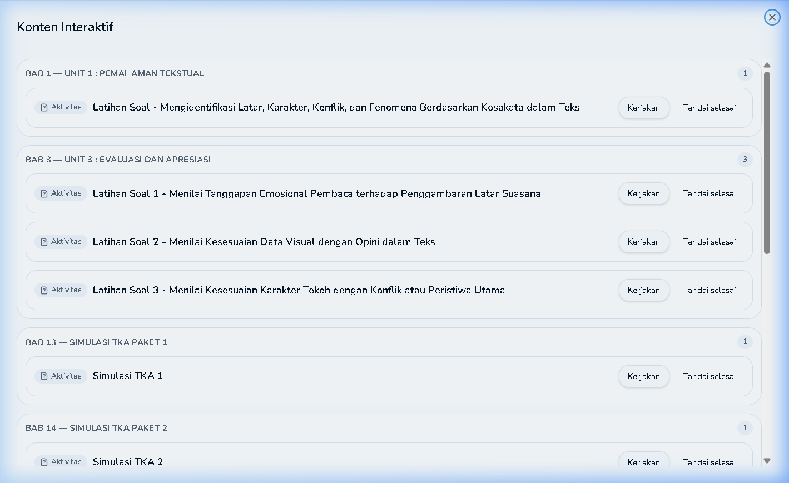
Toolbar bawah E-Reader menyediakan navigasi cepat: Slider Halaman, tombol panah, Pengaturan (zoom & mode 1/2 halaman), Daftar Isi bab, Bookmark penanda halaman, dan Whiteboard untuk coret-coret catatan. E-Reader juga memproteksi konten dengan sistem anti-screenshot DRM (konten otomatis disamarkan jika screenshot terdeteksi).
Klik tombol bintang "Interaktif" pada toolbar bawah untuk membuka modul latihan per bab. Siswa dapat langsung mengklik "Kerjakan" untuk menjawab kuis pemahaman tekstual, evaluasi apresiasi, atau menjalankan Simulasi TKA Paket 1 & 2 tanpa perlu keluar dari buku bacaan. Klik "Tandai selesai" untuk melacak progress belajar mandiri.
Manajemen "Koleksi Saya" (4 Tab, Buku Ditugaskan & Pengembalian)
Koleksi SiswaHalaman Koleksi Saya (sebelumnya bernama Buku Saya) adalah ruang kelola seluruh koleksi buku digital pribadimu. Di bagian atas halaman terpampang 2 indikator cepat: Pinjaman aktif dan Dalam antrean. Antarmuka terbaru kini terbagi menjadi 4 tab kategori terpadu:
- 1. Tab "Milik Saya" — Memuat seluruh buku yang kamu beli secara mandiri melalui Toko BelajarPlus. Buku di tab ini berstatus hak milik pribadi tanpa batasan masa pinjam.
- 2. Tab "Dipinjam" — Menampilkan buku digital yang dipinjam dari perpustakaan sekolah dengan masa aktif (7–14 hari). Setelah jatuh tempo, akses membaca terkunci otomatis agar kuota lisensi kembali ke sekolah.
- 3. Tab "Ditugaskan" (Fitur Baru Unggulan!) — Integrasi langsung dengan guru! Seluruh buku teks, modul suplemen, atau lembar bacaan yang disematkan langsung oleh bapak/ibu guru sebagai rujukan tugas kelas akan otomatis berkumpul di tab ini tanpa perlu kamu cari manual di perpustakaan.
- 4. Tab "Antrean" — Jika kuota eksemplar digital sekolah sedang penuh, buku yang kamu pesan masuk ke daftar tunggu di tab ini. Begitu siswa lain mengembalikan bukunya, sistem otomatis mengaktifkannya ke tab Dipinjam.
- 5. Tombol "Kembalikan" Mandiri — Jika sudah selesai membaca sebelum tanggal jatuh tempo, klik tombol merah "Kembalikan" pada kartu buku untuk melepaskan kuota lisensi bagi teman sekelas yang sedang mengantre.
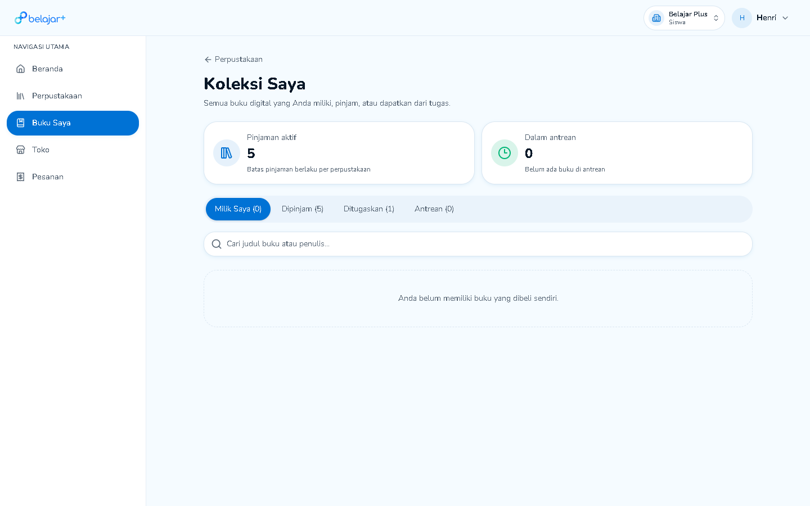
Alur Pengerjaan Tugas & Ujian Lembar Jawab Digital (LJD)
Penugasan & Ujian LJDPengerjaan tugas, kuis, maupun ujian di BelajarPlus menggunakan sistem Lembar Jawab Digital (LJD) berbasis web yang terintegrasi langsung dengan bank soal guru serta sistem pengawas kejujuran otomatis. Ikuti 4 tahap terpadu berikut saat mengerjakan:
- 1. Akses Tugas & Mulai Pengerjaan — Buka menu Kelas Saya, pilih ruang kelas guru yang bersangkutan, lalu buka tab "Penugasan" (atau klik langsung kartu tugas di dashboard). Perhatikan instruksi, batas tenggat waktu, lalu tekan tombol biru "Kerjakan" untuk membuka layar ujian.
-
2. Antarmuka Soal, Stimulus & Pengawas Anti-Cheat — Begitu layar LJD terbuka:
- Header Pengawas: Menampilkan nama siswa, nomor soal aktif (contoh:
Soal 1/30), progress bar (Terjawab X / Total), dan indikator merah Pelanggaran Anti-Cheat (mencatat otomatis jika kamu berpindah tab atau keluar dari layar pengerjaan). - Kartu Soal & Stimulus: Baca teks bacaan, narasi stimulus, tabel, atau grafik. Jika ragu-ragu dengan jawabanmu, klik tombol "🚩 Tandai" di sudut kanan atas kartu soal.
- Memilih Jawaban: Klik opsi jawaban yang tersedia (Pilihan Ganda, Benar/Salah, atau PGK). Gunakan tombol "< Sebelumnya" dan "Berikutnya >" untuk berpindah nomor secara teratur.
- Navigator Soal (1–30): Grid nomor soal di bagian bawah memungkinkanmu melompat langsung ke butir nomor mana pun secara instan.
- Header Pengawas: Menampilkan nama siswa, nomor soal aktif (contoh:
-
3. Halaman Tinjau Jawaban Sebelum Submit — Sebelum mengakhiri ujian, klik tombol biru "Ke halaman tinjau" di bawah navigator nomor:
- Sistem otomatis menampilkan rekap peringatan jika masih ada butir kosong: "X soal belum dijawab".
- Status setiap nomor ditampilkan transparan: tanda strip (
—) jika belum diisi, atau tanda centang/simbol jika sudah terisi. - Ketuk nomor apa pun pada daftar untuk langsung kembali dan memperbaiki jawaban sebelum menekan kirim akhir.
-
4. Pengumpulan Lembar Jawaban, Skor Instan & Analisis Kompetensi — Tekan tombol konfirmasi kirim pada halaman tinjau (atau sistem melakukan auto-submit otomatis jika timer ujian menyentuh 00:00). Layar langsung menampilkan evaluasi hasil belajarmu:
- Ringkasan Skor Persentase (contoh: 93.33%), total jawaban Benar, dan total Salah.
- Konfirmasi pengiriman: "🏆 Laporan dikirim ke guru [Nama Guru Pengampu]".
- Grafik batang Analisis Kompetensi yang memetakan tingkat penguasaanmu pada setiap indikator kompetensi dasar.
🚨 SOP & Aturan Ketat Saat Mengerjakan Ujian LJD:
- Sistem Pengawas Anti-Cheat Aktif: Jangan berpindah tab browser, membuka aplikasi lain, atau menekan tombol Back / Refresh. Sistem keamanan mencatat jumlah pelanggaran dan dapat melakukan *auto-submit* paksa (ujian ditutup seketika).
- Timer Habis (00:00) = Auto-Submit: Jawaban yang sudah kamu pilih tersimpan otomatis saat waktu habis. Tidak perlu panik jika belum sempat menekan tombol "Kirim Lembar Jawaban".
- Jika Internet Terputus / Wi-Fi Mati di Tengah Ujian: JANGAN TUTUP BROWSER! Tetap berada di halaman ujian, sambungkan kembali koneksi internetmu secepatnya. Jika layar macet, segera lapor langsung ke bapak/ibu guru pengawas kelas agar akses ujian dapat di-reset melalui panel guru.
- Rekomendasi Perangkat: Sangat disarankan mengerjakan ujian LJD menggunakan Laptop / Komputer PC / Tablet agar teks soal panjang, tabel data, dan gambar stimulus terlihat jelas tanpa terpotong layar kecil HP.
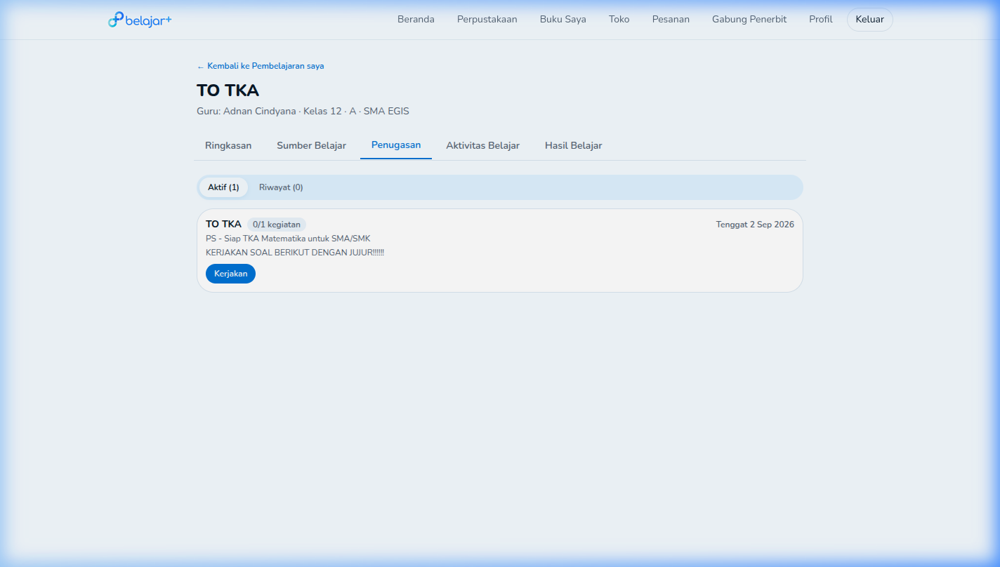
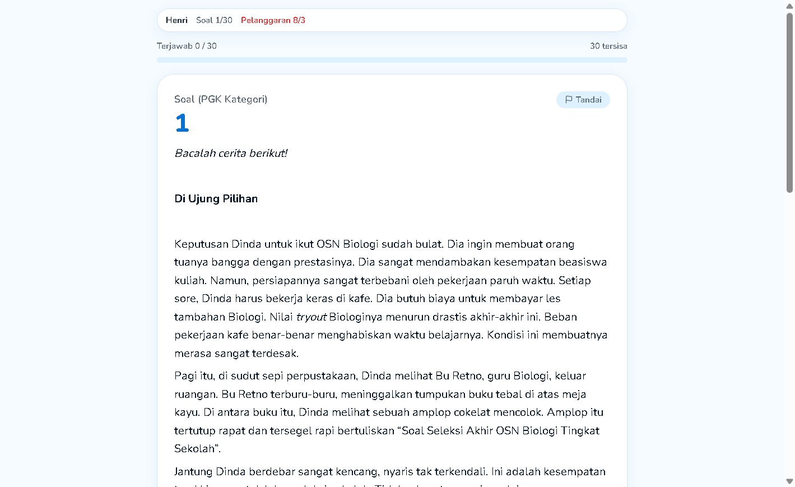
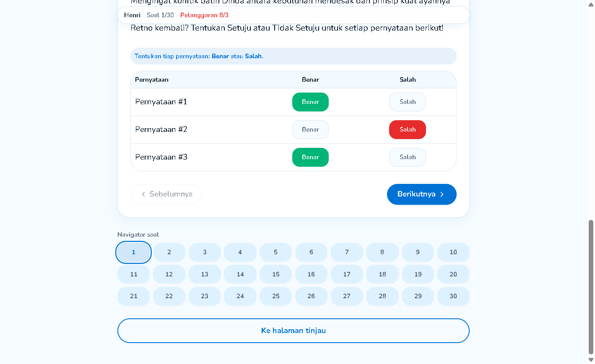
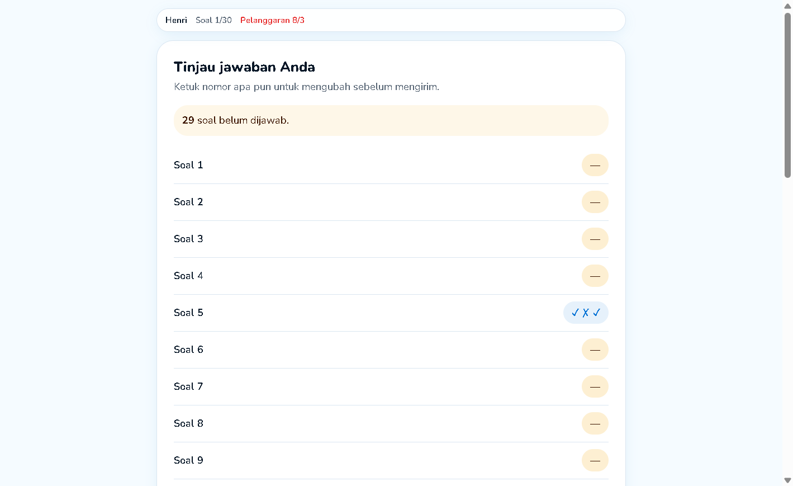
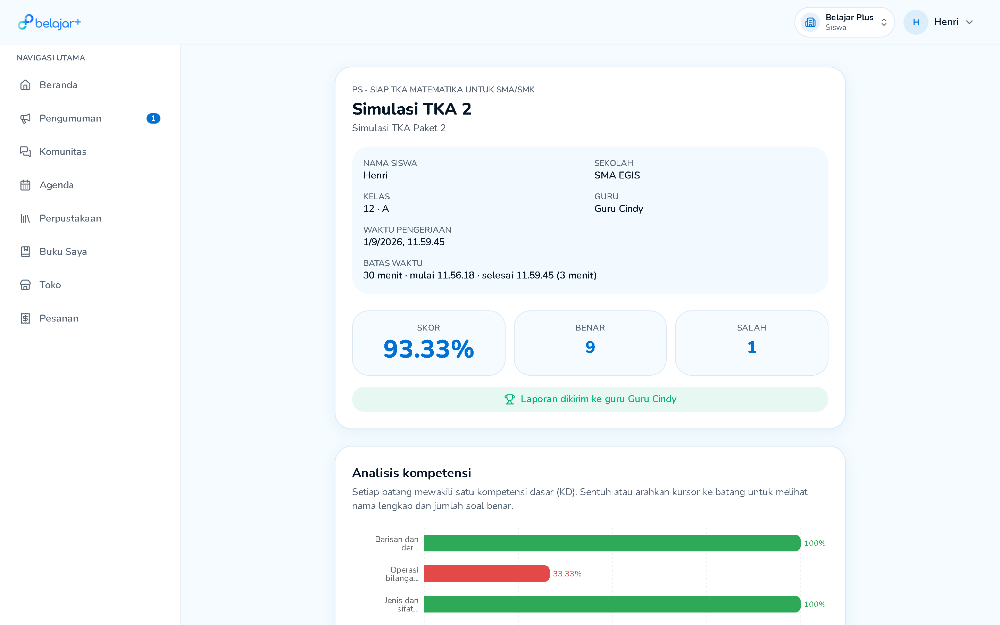
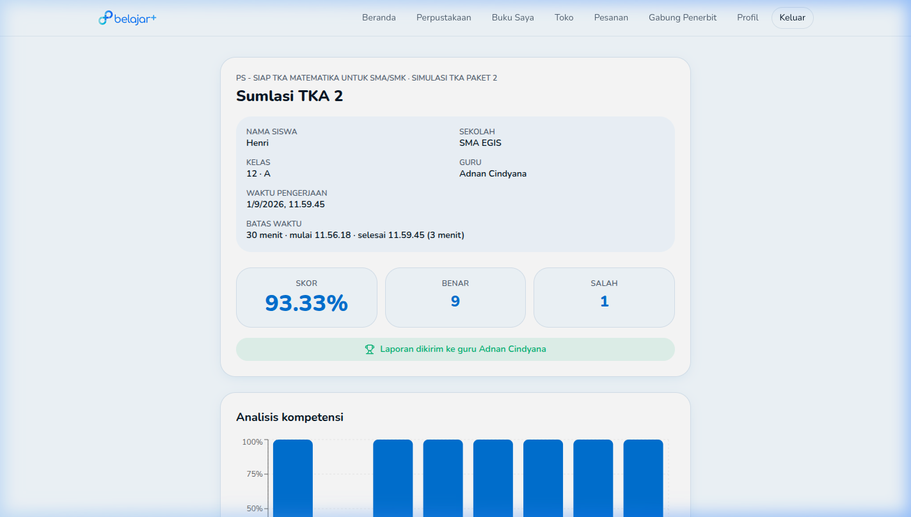
Buka menu Kelas Saya lalu klik tab Penugasan. Klik tombol biru "Kerjakan" untuk meluncurkan antarmuka ujian LJD. Perhatikan indikator merah Pelanggaran Anti-Cheat di bagian atas yang mendeteksi perpindahan tab browser. Baca teks stimulus, gunakan tombol "🚩 Tandai" untuk nomor ragu-ragu, dan lompat nomor dengan cepat lewat kotak Navigator Soal (1–30) di bagian bawah.
Sebelum mengirim lembar ujian, klik tombol "Ke halaman tinjau" untuk memastikan tidak ada soal yang terlewat (sistem menampilkan notifikasi "X soal belum dijawab"). Setelah dikumpulkan atau saat waktu 00:00 berakhir (auto-submit), sistem langsung menampilkan Skor Persentase, total Benar/Salah, konfirmasi pengiriman ke guru, serta grafik Analisis Kompetensi penguasaan materi.
Beli Buku di Toko & Panduan Pembayaran Manual
Toko & PembayaranBagaimana jika kuota buku perpustakaan sekolah sudah penuh atau kamu butuh buku teks pendamping serta paket Tryout SNBT? Siswa dan orang tua/wali murid dapat membeli buku mandiri langsung melalui menu Toko (Shop).
👨👩👧 Catatan Khusus Orang Tua / Wali Murid:
Pembayaran di BelajarPlus saat ini menggunakan sistem Transfer Manual (bukan payment gateway / QRIS otomatis) dan wajib mengunggah foto bukti transfer agar pesanan diverifikasi oleh admin sekolah. Ikuti 5 langkah terpadu berikut:
-
1. Eksplorasi Katalog & Faceted Filter Chips di Toko — Buka menu Toko di navigasi atas. Antarmuka terbaru dilengkapi chip filter pintar untuk memudahkan pencarian:
- Filter Kategori: Pilih chip kategori seperti Semua atau Teks Pendamping.
- Filter Tingkat Kelas: Saring instan dari Kelas 1 hingga Kelas 12.
- Filter Jenis Produk: Pilih Semua Jenis, Cetak, Digital, atau Paket (Cetak + Digital).
- Pengurutan: Atur urutan berdasarkan Terbaru, Harga Terendah, Harga Tertinggi, atau Judul A-Z.
- 2. Cek Keranjang Belanja (`/cart`) — Klik ikon Keranjang di pojok kanan atas. Pastikan judul buku, jenjang kelas, dan jumlah eksemplar sudah sesuai, lalu klik tombol biru "Lanjut ke checkout".
- 3. Halaman Checkout & Verifikasi Data Siswa (`/checkout`) — Pastikan kolom Identitas Siswa (Nama, Sekolah, Kelas, dan Rombel) sudah cocok. Jika memilih varian Cetak, isi nama penerima dan alamat pengiriman dengan lengkap. Klik tombol "Buat pesanan".
-
4. Halaman Detail Pesanan & Transfer Bank Manual — Layar akan menampilkan Nomor Pesanan Unik (contoh:
BPLUS-20260903-CA1606).
⚠️ PENTING: Lakukan transfer via ATM atau mobile banking sesuai total nominal. Wajib cantumkan Nomor Pesanan pada kolom Berita/Catatan Transfer agar admin dapat mencocokkan pembayaranmu.
*Catatan: Jika rincian rekening tujuan tertulis strip (-), segera konfirmasikan nomor rekening resmi ke bendahara / pihak sekolahmu. - 5. Unggah Bukti Struk & Aktivasi Buku — Foto struk ATM atau screenshot bukti mutasi m-banking (format JPG/PNG/PDF, ukuran maks 5 MB). Klik "Pilih file" lalu tekan tombol "Unggah bukti & konfirmasi". Status pesanan akan menjadi Menunggu konfirmasi. Begitu disetujui admin, buku digital otomatis langsung aktif di tab Milik Saya pada menu Koleksi Saya!
belajarplus.id/orders secara manual di bilah alamat browser untuk menghindari kendala sesi login berulang (redirect loop).
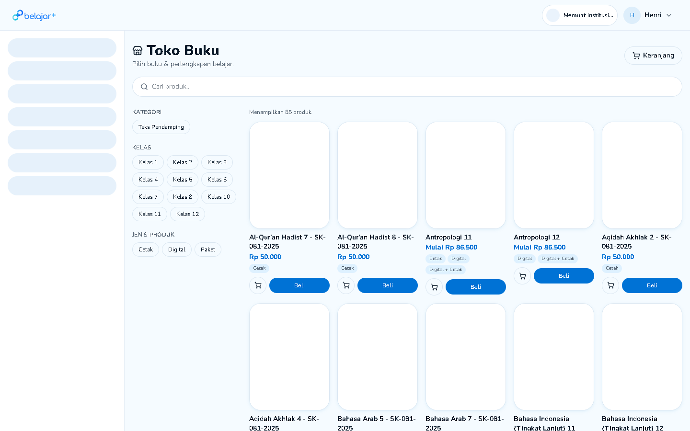
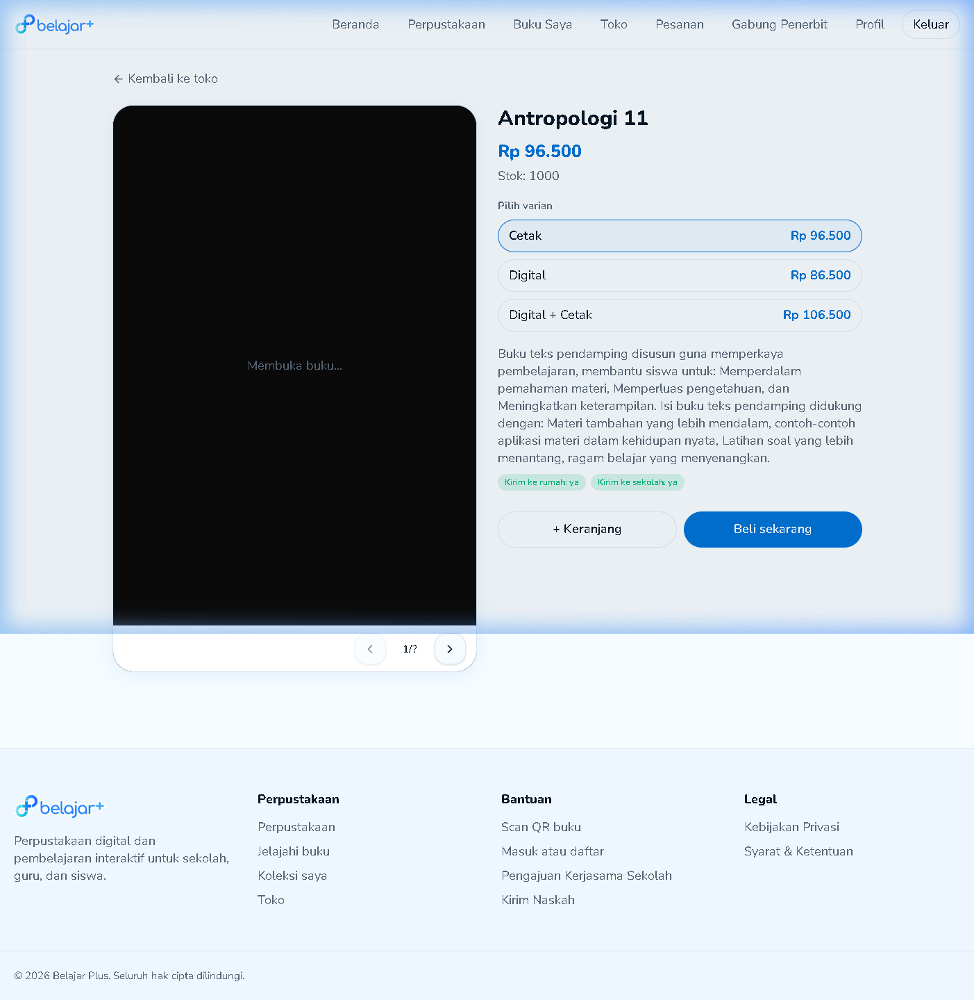
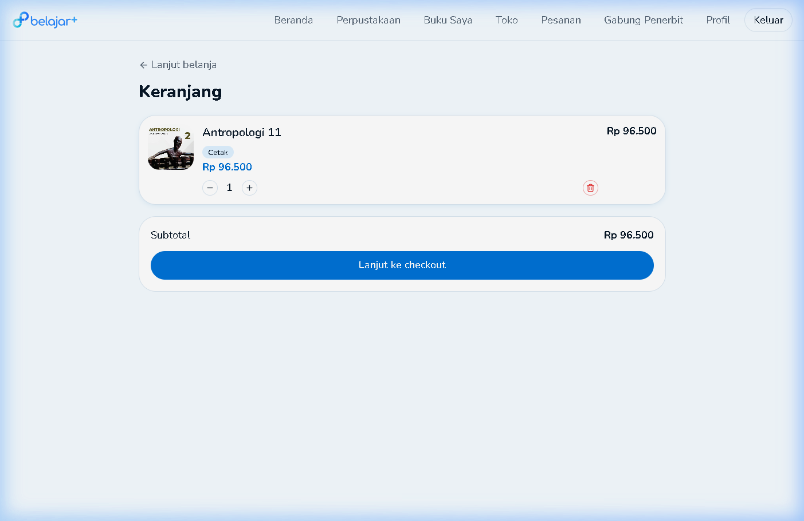
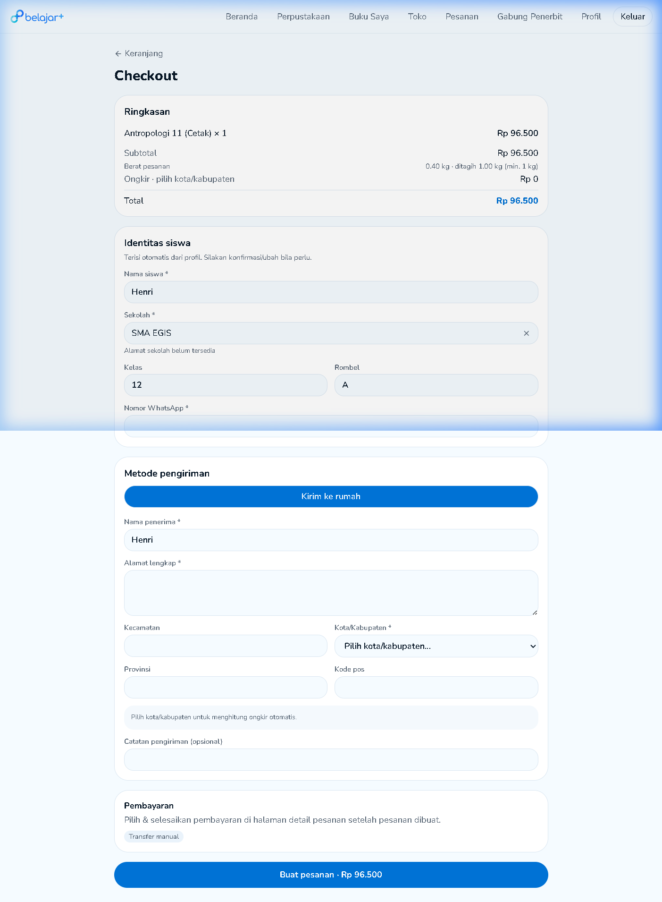
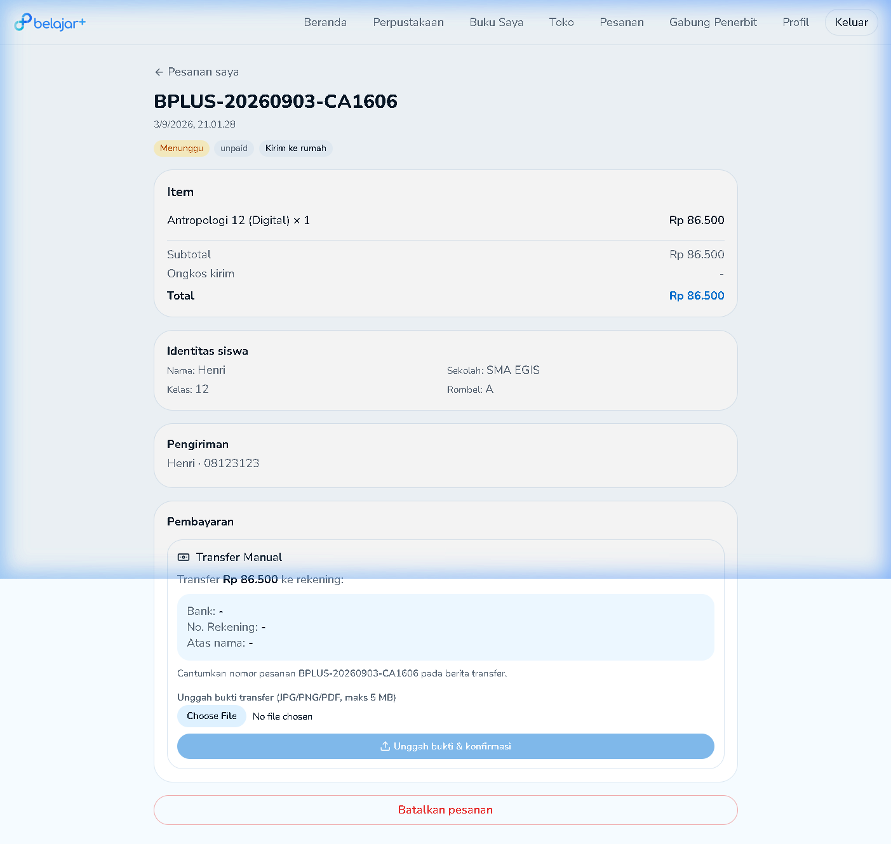
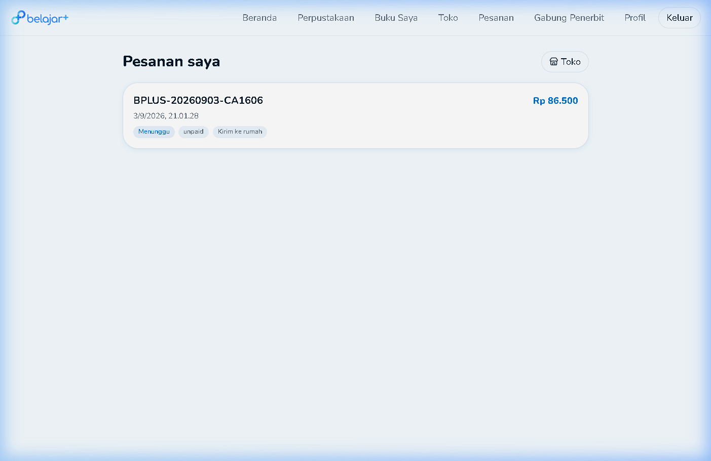
Buka menu Toko di navigasi atas. Pilih judul buku lalu tentukan varian (Digital, Cetak, atau Digital + Cetak). Klik "+ Keranjang" lalu buka ikon keranjang di pojok kanan atas dan klik "Lanjut ke checkout".
Di halaman Checkout, pastikan kolom Identitas Siswa (Nama, Sekolah, Kelas, Rombel) sudah benar. Jika memilih varian Cetak, isi alamat pengiriman lengkap. Klik "Buat pesanan" untuk lanjut.
Catat Nomor Pesanan Unik (contoh:
BPLUS-20260903-CA1606). Transfer nominal tepat via ATM/m-Banking, wajib cantumkan Nomor Pesanan di kolom Berita Transfer. Foto struk/screenshot mutasi (JPG/PNG/PDF, maks 5 MB) lalu klik "Unggah bukti & konfirmasi". Buku aktif di Buku Saya setelah admin verifikasi. Jika rekening tujuan masih strip (—), hubungi bendahara sekolah.
Pengaturan Akun, Profil Terpadu (4 Tab) & Keamanan Sesi
Akun & PrivasiLangkah penutup yang sangat krusial adalah melengkapi dan mengamankan identitas belajarmu. Buka menu Profil Saya (klik avatar foto profil di sudut kanan atas bilah navigasi). Antarmuka profil BelajarPlus v2.0 dirancang terintegrasi dengan 4 tab manajemen utama:
- 1. Tab "Institusi & Peran" & Tombol "+ Gabung Institusi" (Fitur Baru) — Menampilkan daftar sekolah mitra yang terhubung ke akunmu beserta peran aktifmu (Siswa). Jika kamu pindah sekolah atau bersekolah di dua institusi mitra sekaligus, klik tombol biru "+ Gabung Institusi" untuk menautkan sekolah baru langsung dari profil tanpa perlu membuat akun dari awal!
-
2. Tab "Keamanan" — Pusat proteksi akunmu:
- Perbarui Kata Sandi: Masukkan sandi saat ini dan buat sandi baru minimal 8 karakter secara berkala.
- Status Verifikasi Email: Memastikan emailmu bertanda centang hijau aktif.
- Nomor WhatsApp: Tautkan nomor WhatsApp aktif untuk pemulihan akun darurat dan notifikasi tugas penting.
- 3. Tab "Preferensi" — Menyesuaikan preferensi notifikasi akademik dan kenyamanan tampilan antarmuka.
- 4. Tab "Aktivitas" — Memantau riwayat log aktivitas masuk (login timestamp, peramban, dan perangkat) demi mencegah akses tidak sah.
- 5. Switcher Institusi di Header & SOP Logout — Gunakan tombol "Institusi aktif" di header untuk beralih instansi tanpa logout. Jika menggunakan komputer lab sekolah atau gawai bersama, selalu klik Keluar (Logout) setelah selesai belajar!
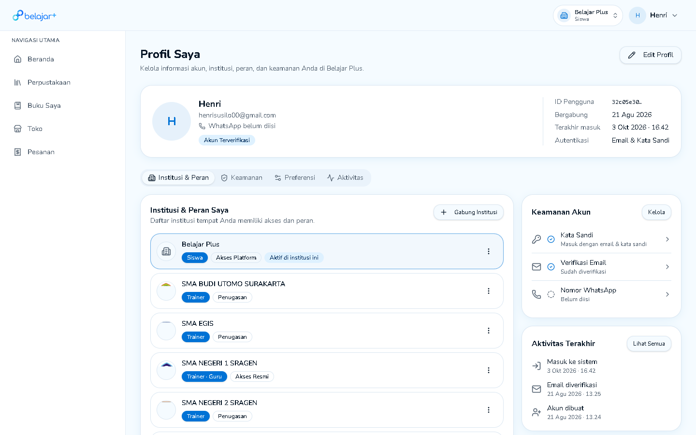
Pendaftaran & Aktivasi Akun Pendidik
Registrasi PengajarBuka portal belajarplus.id/auth dan pilih tab "Daftar". Formulir registrasi BelajarPlus v2.0 menggunakan sistem satu pintu terpadu ("Satu halaman untuk siswa & guru"):
- Nama Lengkap: Masukkan nama lengkap bapak/ibu pendidik.
- Alamat Email: Disarankan menggunakan email dinas/sekolah aktif atau email pribadi.
- Kata Sandi: Buat password kuat minimal 8 karakter (terdiri dari huruf, angka, dan simbol pengaman).
- Verifikasi Sandi & Tampilkan Password: Konfirmasi ulang kata sandi dan gunakan centang "Tampilkan Password" untuk validasi visual.
- Aktivasi Email: Klik tombol "Daftar" lalu periksa kotak masuk email untuk mengonfirmasi tautan aktivasi akun.
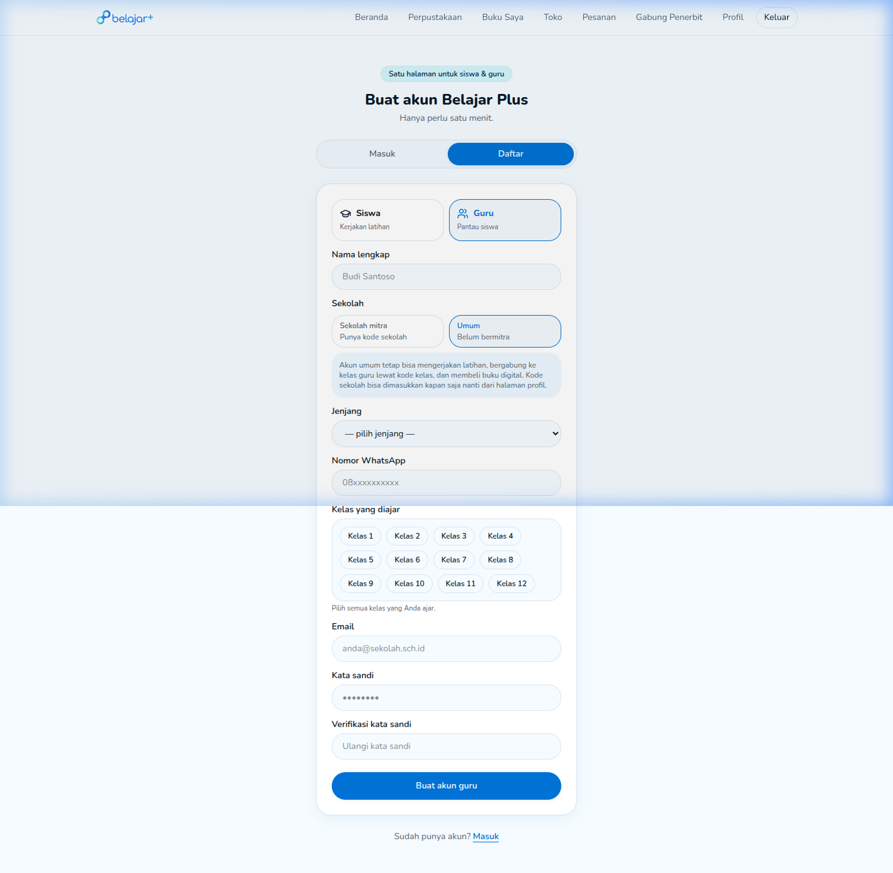
Login & Akses Dashboard Guru
Panel GuruLogin menggunakan akun pengajar BelajarPlus yang terdaftar. Masuk ke halaman Dashboard Pengajar untuk mengelola kelas dan materi pembelajaran sekolah.
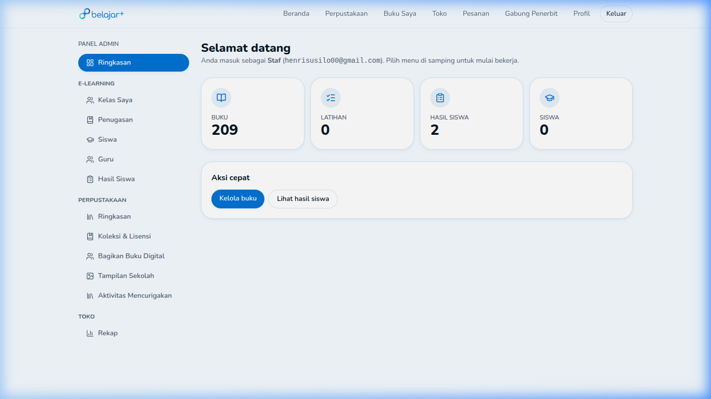
Buat & Kelola Ruang Kelas
Manajemen KelasBuka menu "Kelas Saya" untuk membuat kelas baru (misal: Kelas 11 Biologi or Kelas 12 TKA Matematika). Tambahkan siswa terdaftar ke dalam rombel kelasmu.
- Atur nama kelas, tingkatan jenjang, dan mata pelajaran
- Undang siswa menggunakan Kode Kelas unik atau assign otomatis
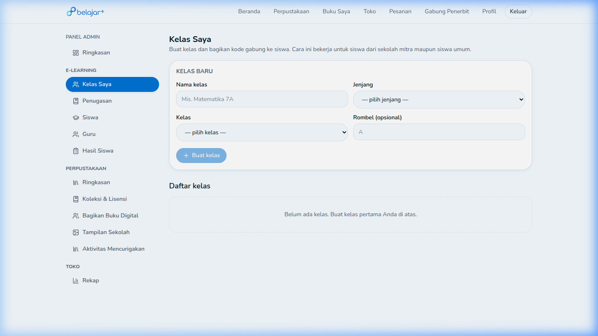
Hubungkan Buku Acuan Pembelajaran
Sumber BelajarPada tab "Sumber Belajar" di dalam kelas, pilih buku acuan utama dari perpustakaan digital sekolah yang menjadi bahan bacaan wajib siswa.
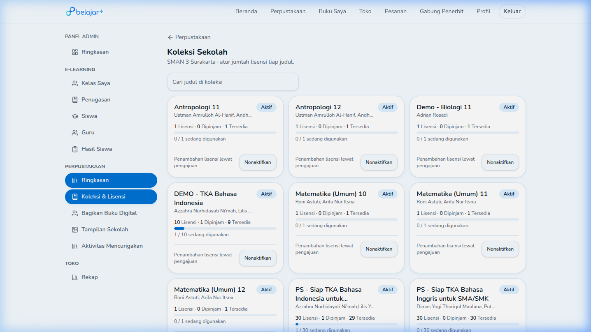
Buat Penugasan & Lembar Jawab Digital (LJD)
Asesmen & KuisBuka tab "Penugasan" lalu buat penugasan baru. Pilih modul asesmen (Asesmen Formatif, Sumatif, Tryout TKA) dan tentukan tenggat waktu pengumpulan (deadline).
- Tentukan bobot nilai per aktivitas
- Aktifkan mode pengawasan kejujuran (anti-cheat focus tracking)
- Atur tanggal publikasi dan batas waktu pengerjaan
Pantau Transkrip Nilai & Hasil Belajar Real-time
Gradebook & AnalitikPantau hasil pengerjaan kuis siswa secara real-time di tab "Hasil Belajar". Guru dapat melihat rincian skor per siswa, statistik ketuntasan minimal (KKM), dan analisis komparatif kompetensi bab.
5 Modul Praktik Mengajar Digital (Microteaching)
Serial video studi kasus interaktif dan simulasi skenario pengajaran kelas nyata menggunakan ekosistem BelajarPlus. Dirancang khusus untuk mengoptimalkan literasi digital guru & siswa.
Registrasi Instansi & Pengajuan Kode Sekolah Mitra
Pendaftaran SekolahSekolah / Institusi baru mendaftarkan lembaganya melalui koordinasi dengan BelajarPlus untuk mendapatkan Kode Sekolah Mitra resmi (`SKL-XXXXX`).
- Mengajukan pendaftaran akun Admin Sekolah / Kepala Sekolah.
- Menerima Kode Sekolah Mitra unik untuk dibagikan ke semua Guru & Siswa.
- Aktivasi lisensi koleksi buku digital perpustakaan sekolah.
Monitoring Dashboard Analitik Sekolah
Executive SummaryLogin ke akun Admin / Kepala Sekolah untuk memantau ringkasan performa perpustakaan digital dan keaktifan pembelajaran sekolah secara menyeluruh.
- Total buku digital dipinjam bulan ini
- Statistik siswa & guru paling aktif
- Grafik minat baca per jenjang dan mata pelajaran
Manajemen Lisensi & Koleksi Sekolah
Stok Buku DigitalBuka menu "Koleksi Sekolah" untuk mengelola jumlah lisensi (eksemplar digital) buku teks dan buku pendamping yang dimiliki sekolah.
Pengelolaan Data Pengguna & Pembagian Rombel
User ManagementKelola data guru pengajar, akun siswa per kelas, dan staf perpustakaan. Impor data pengguna sekolah secara kolektif menggunakan berkas spreadsheet.
Pengadaan Buku via Portal Toko / Penerbit
Pengadaan BukuBuka menu "Toko / Penerbit" untuk mengajukan pengadaan judul buku baru atau bekerja sama langsung dengan mitra penerbit resmi.
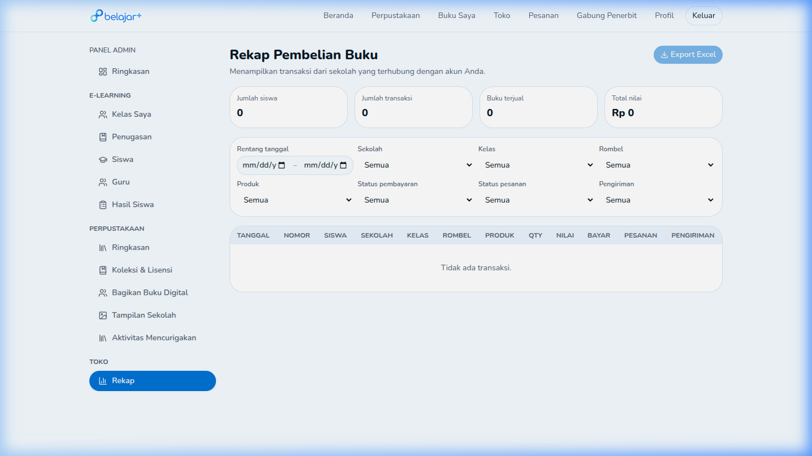
Audit Keamanan & Laporan Evaluasi Periodik
Laporan EksekutifUnduh laporan bulanan untuk keperluan akreditasi sekolah, audit perpustakaan, dan evaluasi capaian kurikulum digital.